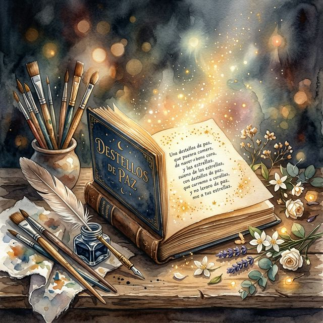

Poeta · Pintora · Escritora · Maestra Poet · Painter · Writer · Teacher Poète · Peintre · Écrivaine · Enseignante Poetessa · Pittrice · Scrittrice · Maestra Dichterin · Malerin · Schriftstellerin · Lehrerin Poetisa · Pintora · Escritora · Mestra Поэт · Художник · Писатель · Учитель شاعرة · رسامة · كاتبة · معلمة 诗人 · 画家 · 作家 · 教师 詩人 · 画家 · 作家 · 教師
María Paz Arés Osset, nacida en Sidi Ifni, es mucho más que una artista: es una alquimista del verbo y del espíritu, envuelta en un halo de misticismo y belleza. Su búsqueda trascendental la ha llevado a explorar religiones y culturas, tejiendo un arte que es lienzo y poema de la unidad humana.
María Paz Arés Osset, born in Sidi Ifni, is much more than an artist: she is an alchemist of words and spirit, wrapped in an aura of mysticism and beauty. Her transcendental quest has led her to explore religions and cultures, weaving an art that is both canvas and poem of human unity.
María Paz Arés Osset, née à Sidi Ifni, est bien plus qu'une artiste : c'est une alchimiste du verbe et de l'esprit, enveloppée d'un halo de mysticisme et de beauté. Sa quête transcendantale l'a amenée à explorer les religions et les cultures, tissant un art qui est à la fois toile et poème de l'unité humaine.
María Paz Arés Osset, nata a Sidi Ifni, è molto più di un'artista: è un'alchimista del verbo e dello spirito, avvolta in un alone di misticismo e bellezza. La sua ricerca trascendentale l'ha portata a esplorare religioni e culture, tessendo un'arte che è tela e poema dell'unità umana.
María Paz Arés Osset, geboren in Sidi Ifni, ist weit mehr als eine Künstlerin: Sie ist eine Alchemistin des Wortes und des Geistes, umhüllt von einem Hauch von Mystik und Schönheit. Ihre transzendentale Suche hat sie dazu geführt, Religionen und Kulturen zu erforschen und eine Kunst zu schaffen, die Leinwand und Gedicht der menschlichen Einheit zugleich ist.
María Paz Arés Osset, nascida em Sidi Ifni, é muito más do que uma artista: é uma alquimista do verbo e do espírito, envolta numa aura de misticismo e beleza. A sua busca transcendental levou-a a explorar religiões e culturas, tecendo uma arte que é tela e poema da unidade humana.
Мария Пас Арес Оссет, родившаяся в Сиди-Ифни, — это гораздо больше, чем просто художница: она — алхимик слова и духа, окутанная аурой мистицизма и красоты. Её трансцендентальный поиск привёл её к исследованию религий и культур, создавая искусство, которое является холстом и поэмой человеческого единства.
ماريا باث أريس أوسيت، المولودة في سيدي إفني، هي أكثر من مجرد فنانة: إنها خيميائية الكلمة والروح، محاطة بهالة من الروحانية والجمال. قادها بحثها المتسامي إلى استكشاف الأديان والثقافات، لتنسج فناً يجمع بين اللوحة والقصيدة في وحدة إنسانية.
玛丽亚·帕斯·阿雷斯·奥赛特出生于西迪伊夫尼，她不仅仅是一位艺术家：她是文字与灵魂的炼金术士，笼罩在神秘与美丽的光环中。她的超越性探索引领她探索宗教与文化，编织出一种既是画布又是诗歌的人类统一的艺术。
マリア・パス・アレス・オセットはシディ・イフニで生まれ、単なるアーティストをはるかに超えた存在です。彼女は言葉と精神の錬金術師であり、神秘と美のオーラに包まれています。その超越的な探求は宗教と文化の探究へと導き、人間の統一のキャンバスであり詩でもある芸術を紡いでいます。
Si hay algo que define a Paz Arés Osset como artista es su voz poética. Sus versos no son simples composiciones literarias: son destellos de luz que buscan alcanzar el corazón de quien los lee, sin importar su idioma, su cultura o su rincón del mundo. Cada poema es un acto de generosidad, una mano tendida al alma del lector.
Su catálogo poético abarca más de treinta poemas que exploran el amor, la naturaleza, la espiritualidad, la denuncia social y la paz universal: desde el intimismo de «Hueles a Amor» hasta la fuerza de «Grito por la Paz», pasando por la contemplación mística de «Sinfonía de la Naturaleza» o la ternura desgarradora de «Llanto de los Niños».
If there is one thing that defines Paz Arés Osset as an artist, it is her poetic voice. Her verses are not simple literary compositions: they are flashes of light that seek to reach the heart of those who read them, regardless of their language, culture, or corner of the world. Each poem is an act of generosity, a hand extended to the reader's soul.
Her poetic catalog includes more than thirty poems exploring love, nature, spirituality, social protest, and universal peace: from the intimacy of "You Smell of Love" to the strength of "Cry for Peace", through the mystical contemplation of "Nature's Symphony" or the heart-wrenching tenderness of "Cry of the Children".
S'il est une chose qui définit Paz Arés Osset en tant qu'artiste, c'est sa voix poétique. Ses vers ne sont pas de simples compositions littéraires : ce sont des éclats de lumière qui cherchent à atteindre le cœur de ceux qui les lisent, quelle que soit leur langue, leur culture ou leur coin du monde. Chaque poème est un acte de générosité, une main tendue vers l'âme du lecteur.
Son catalogue poétique comprend plus de trente poèmes explorant l'amour, la nature, la spiritualité, la protestation sociale et la paix universelle : de l'intimité de « Tu sens l'Amour » à la puissance du « Cri pour la Paix », en passant par la contemplation mystique de la « Symphonie de la Nature » ou la tendresse déchirante du « Cri des Enfants ».
Se c'è una cosa che definisce Paz Arés Osset come artista, è la sua voce poetica. I suoi versi non sono semplici composizioni letterarie: sono sprazzi di luce che cercano di raggiungere il cuore di chi li legge, indipendentemente dalla lingua, dalla cultura o dall'angolo di mondo in cui si trova. Ogni poesia è un atto di generosità, una mano tesa all'anima del lettore.
Il suo catalogo poetico comprende più di trenta poesie che esplorano l'amore, la natura, la spiritualità, la protesta sociale e la pace universale: dall'intimità di «Profumi d'Amore» alla forza di «Grido per la Pace», passando per la contemplazione mistica della «Sinfonia della Natura» o la tenerezza straziante del «Pianto dei Bambini».
Wenn es etwas gibt, das Paz Arés Osset als Künstlerin definiert, dann ist es ihre poetische Stimme. Ihre Verse sind keine einfachen literarischen Kompositionen: Sie sind Lichtblitze, die das Herz derer erreichen wollen, die sie lesen, ungeachtet ihrer Sprache, ihrer Kultur oder ihres Ortes auf der Welt. Jedes Gedicht ist ein Akt der Großzügigkeit, eine dem Leser gereichte Hand.
Ihr lyrisches Werk umfasst mehr als dreißig Gedichte, die Liebe, Natur, Spiritualität, soziale Proteste und den universellen Frieden erforschen: von der Intimität von „Du duftest nach Liebe“ bis zur Kraft vom „Ruf nach Frieden“, über die mystische Betrachtung der „Sinfonie der Natur“ bis hin zur herzzerreißenden Zärtlichkeit vom „Klagen der Kinder“.
Se há algo que define Paz Arés Osset como artista é a sua voz poética. Os seus versos não são meras composições literárias: são clarões de luz que procuram alcançar o coração de quem os lê, independentemente da sua língua, cultura ou canto do mundo. Cada poema é um ato de generosidade, uma mão estendida à alma do leitor.
O seu catálogo poético inclui mais de trinta poemas que exploram o amor, a natureza, a espiritualidade, a denúncia social e a paz universal: desde o intimismo de «Cheiras a Amor» à força do «Grito pela Paz», passando pela contemplação mística da «Sinfonia da Natureza» ou pela ternura dilacerante do «Choro das Crianças».
Если и есть что-то, что определяет Пас Арес Оссет как художника, так это её поэтический голос. Её стихи — это не просто литературные произведения: это вспышки света, которые стремятся достичь сердца каждого читателя, независимо от его языка, культуры или уголка мира. Каждое стихотворение — это акт щедрости, рука, протянутая к душе читателя.
Её поэтический каталог включает более тридцати стихотворений, посвященных любви, природе, духовности, социальному протесту и всеобщему миру: от интима «Ты пахнешь любовью» до силы «Крика о мире», через мистическое созерцание «Симфонии природы» или душераздирающую нежность «Плача детей».
إذا كان هناك شيء يميز باث أريس أوسيت كفنانة، فهو صوتها الشعري. قصائدها ليست مجرد مؤلفات أدبية بسيطة: إنها ومضات من الضوء تسعى للوصول إلى قلب من يقرأها، بغض النظر عن لغتهم أو ثقافتهم أو مكانهم في العالم. كل قصيدة هي عمل من أعمال الكرم، ويد ممدودة لروح القارئ.
يتضمن كتالوجها الشعري أكثر من ثلاثين قصيدة تستكشف الحب والطبيعة والروحانية والاحتجاج الاجتماعي والسلام العالمي: من حميمية «رائحة الحب» إلى قوة «صرخة أجل السلام»، مروراً بالتأمل الصوفي في «سمفونية الطبيعة» أو الحنان المفجع في «بكاء الأطفال».
如果有一件事定义了作为艺术家的帕斯·阿雷斯·奥赛特，那就是她的诗意之声。她的诗句不仅仅是简单的文学创作：它们是闪耀的光芒，旨在触及读者的心灵，无论他们的语言、文化或身处世界哪个角落。每一首诗都是一种慷慨的行为，是伸向读者灵魂的一只手。
她的诗歌目录包括三十多首诗，探索爱情、自然、灵性、社会抗议和普遍和平：从《你闻起来像爱》的亲密，到《为和平呐喊》的力量，经由《大自然的交响曲》的神秘冥想，或是《孩子们的哭泣》中令人心碎的温柔。
パズ・アレス・オセットをアーティストとして定義するものがあるとするならば、それは彼女の詩的な声です。彼女の詩は単なる文学的創作ではありません。それらは、言語、文化、世界のどこにいるかに関わらず、読む人の心に届こうとする光の輝きなのです。各詩は寛大さの行為であり、読者の魂に差し伸べられた手なのです。
彼女の詩のカタログには、愛、自然、精神性、社会への訴え、そして世界の平和を探求する30以上の詩が含まれています。親しみやすい『愛の香り』から、力強い『平和への叫び』、神秘的な瞑想の『自然の交響曲』、そして心を打つ誠実な『子供たちの嘆き』まで多岐にわたります。
Cada poema ha sido traducido a más de diez idiomas para que el mensaje de Paz pueda llegar a cualquier persona del planeta.
Each poem has been translated into more than ten languages so that Paz's message can reach anyone on the planet.
Chaque poème a été traduit dans plus de dix langues pour que le message de Paz puisse atteindre n'importe qui sur la planète.
Ogni poesia è stata tradotta in più di dieci lingue affinché il messaggio di Paz possa raggiungere chiunque sul pianeta.
Jedes Gedicht wurde in mehr als zehn Sprachen übersetzt, damit die Botschaft von Paz jeden Menschen auf dem Planeten erreichen kann.
Cada poema foi traduzido para mais de dez idiomas para que a mensagem de Paz possa chegar a qualquer pessoa do planeta.
Каждое стихотворение было переведено на более чем десять языков, чтобы послание Пас могло достичь любого человека на планете.
تمت ترجمة كل قصيدة إلى أكثر من عشر لغات حتى يمكن لرسالة باث أن تصل إلى أي شخص على هذا الكوكب.
每一首诗都已被翻译成十多种语言，让帕斯的信息能够传达到地球上的每一个人。
各詩は、パズのメッセージが地球上のすべての人に届くよう、10以上の言語に翻訳されています。
Convertir la poesía en experiencia musical es uno de los pilares de este proyecto. Gracias a la tecnología y al talento de compositores, los versos de Paz han cobrado una nueva dimensión sonora. No se trata solo de leer un poema, sino de sumergirse en su atmósfera a través de melodías que potencian su mensaje emocional.
Cada canción es una pieza única que respeta la métrica y el sentimiento original, permitiendo que la palabra escrita vuele más alto a través de las notas.
Turning poetry into a musical experience is one of the pillars of this project. Thanks to technology and the talent of composers, Paz's verses have taken on a new sonic dimension. It is not just about reading a poem, but about immersing oneself in its atmosphere through melodies that enhance its emotional message.
Each song is a unique piece that respects the original meter and feeling, allowing the written word to fly higher through the notes.
Transformer la poésie en expérience musicale est l'un des piliers de ce projet. Grâce à la technologie et au talent des compositeurs, les vers de Paz ont pris une nouvelle dimension sonore. Il ne s'agit pas seulement de lire un poème, mais de plonger dans son atmosphère à travers des mélodies qui renforcent son message émotionnel.
Chaque chanson est une pièce unique qui respecte la métrique et le sentiment originaux, permettant à la parole écrite de s'envoler plus haut grâce aux notes.
Trasformare la poesia in esperienza musicale è uno dei pilastri di questo progetto. Grazie alla tecnologia e al talento dei compositori, i versi di Paz hanno assunto una nuova dimensione sonora. Non si tratta solo di leggere una poesia, ma di immergersi nella sua atmosfera attraverso melodie che ne esaltano il messaggio emotivo.
Ogni canzone è un pezzo unico che rispetta la metrica e il sentimento originale, permettendo alla parola scritta di volare più in alto attraverso le note.
Poesie in ein musikalisches Erlebnis zu verwandeln, ist eine der Säulen dieses Projekts. Dank der Technologie und des Talents von Komponisten haben die Verse von Paz eine neue klangliche Dimension erhalten. Es geht nicht nur darum, ein Gedicht zu lesen, sondern in seine Atmosphäre durch Melodien einzutauchen, die seine emotionale Botschaft verstärken.
Jedes Lied ist ein Unikat, das das ursprüngliche Metrum und Gefühl respektiert und dem geschriebenen Wort erlaubt, durch die Noten höher zu fliegen.
Converter a poesia em experiência musical é um dos pilares deste projeto. Graças à tecnologia e ao talento de compositores, os versos de Paz ganharam uma nova dimensão sonora. Não se trata apenas de ler um poema, mas de mergulhar na sua atmosfera através de melodias que potenciam a sua mensagem emocional.
Cada canção é uma peça única que respeita a métrica e o sentimento original, permitindo que a palavra escrita voe mais alto através das notas.
Превращение поэзии в музыкальный опыт — одна из опор этого проекта. Благодаря технологиям и таланту композиторов стихи Пас обрели новое звуковое измерение. Речь идет не просто о чтении стихотворения, а о погружении в его атмосферу через мелодии, усиливающие его эмоциональный посыл.
Каждая песня — это уникальное произведение, уважающее оригинальный размер и чувство, позволяющее написанному слову лететь выше через ноты.
تحويل الشعر إلى تجربة موسيقية هو أحد ركائز هذا المشروع. بفضل التكنولوجيا وموهبة الملحنين، اتخذت قصائد باث بعداً صوتياً جديداً. الأمر لا يقتصر فقط على قراءة قصيدة، بل يتعلق بالانغماس في أجوائها من خلال ألحان تعزز رسالتها العاطفية.
كل أغنية هي قطعة فريدة تحترم الميزان الشعري والشعور الأصلي، مما يسمح للكلمة المكتوبة بالتحليق عالياً عبر النوتات الموسيقية.
将诗歌转化为音乐体验是该项目的支柱之一。得益于技术和作曲家的天赋，帕斯的诗句呈现出了全新的声音维度。这不仅仅是阅读一首诗，更是通过增强其情感信息的旋律，让自己沉浸在其氛围中。
每首歌都是一个独特的作品，尊重原始的节拍和感受，让书面语言通过音符飞得更高。
詩を音楽体験に変えることは、このプロジェクトの柱の一つです。テクノロジーと作曲家の才能のおかげで、パズの詩は新しい音の次元を帯びるようになりました。単に詩を読むだけでなく、その感情的なメッセージを高めるメロディーを通して、その雰囲気に没頭することなのです。
各曲は、オリジナルの韻律と感情を尊重したユニークな作品であり、書かれた言葉が音符を通してより高く飛ぶことを可能にしています。
Disfruta de las composiciones originales en Spotify.
Enjoy original compositions on Spotify.
Profitez des compositions originales sur Spotify.
Goditi le composizioni originali su Spotify.
Genießen Sie die Originalkompositionen auf Spotify.
Desfruta das composições originais no Spotify.
Наслаждайтесь оригинальными композициями в Spotify.
استمتع بالمؤلفات الأصلية على Spotify.
在 Spotify 上欣赏原创作品。
Spotifyでオリジナル曲をお楽しみください。
Vivimos en una era donde el arte y la técnica deben caminar de la mano. Este sitio web es una muestra de ello: el uso de inteligencia artificial para la traducción, la generación de visuales y la composición musical nos permite derribar las barreras que tradicionalmente limitaban la llegada del mensaje poético.
Nuestra web es un ecosistema vivo donde el misticismo de la obra de Paz se encuentra con las herramientas más avanzadas del siglo XXI para crear algo totalmente nuevo.
We live in an era where art and technology must walk hand in hand. This website is a testament to that: the use of artificial intelligence for translation, visuals generation, and musical composition allows us to tear down the barriers that traditionally limited the reach of the poetic message.
Our website is a living ecosystem where the mysticism of Paz's work meets the most advanced tools of the 21rd century to create something completely new.
Nous vivons dans une époque où l'art et la technique doivent marcher main dans la main. Ce site web en est la preuve : l'utilisation de l'intelligence artificielle pour la traduction, la génération de visuels et la composition musicale nous permet d'abattre les barrières qui limitaient traditionnellement la portée du message poétique.
Notre site web est un écosystème vivant où le mysticisme de l'œuvre de Paz rencontre les outils les plus avancés du XXIe siècle pour créer quelque chose de totalement nouveau.
Viviamo in un'epoca in cui arte e tecnologia devono camminare di pari passo. Questo sito web ne è la prova: l'uso dell'intelligenza artificiale per la traduzione, la generazione di immagini e la composizione musicale ci permette di abbattere le barriere che tradizionalmente limitavano la portata del messaggio poetico.
Il nostro sito web è un ecosistema vivente in cui il misticismo dell'opera di Paz incontra gli strumenti più avanzati del XXI secolo per creare qualcosa di completamente nuovo.
Wir leben in einer Ära, in der Kunst und Technik Hand in Hand gehen müssen. Diese Website ist ein Beweis dafür: Der Einsatz von künstlicher Intelligenz für Übersetzungen, die Erstellung von Visualisierungen und die musikalische Komposition ermöglicht es uns, Barrieren abzubauen, die traditionell die Reichweite der poetischen Botschaft begrenzten.
Unsere Website ist ein lebendiges Ökosystem, in dem die Mystik von Paz' Werk auf die fortschrittlichsten Werkzeuge des 21. Jahrhunderts trifft, um etwas völlig Neues zu schaffen.
Vivemos numa era onde a arte e a técnica devem caminhar de mãos dadas. Este sítio web é uma amostra disso: o uso de inteligência artificial para a tradução, a geração de visuais e a composição musical permite-nos derrubar as barreiras que tradicionalmente limitavam o alcance da mensagem poética.
A nossa web é um ecossistema vivo onde o misticismo da obra de Paz se encontra com as ferramentas mais avançadas do século XXI para criar algo totalmente novo.
Мы живем в эпоху, когда искусство и техника должны идти рука об руку. Этот веб-сайт — тому подтверждение: использование искусственного интеллекта для перевода, генерации визуальных эффектов и музыкальной композиции позволяет нам разрушить барьеры, которые традиционно ограничивали охват поэтического послания.
Наш сайт — это живая экосистема, где мистицизм работ Пас встречается с самыми передовыми инструментами XXI века для создания чего-то совершенно нового.
نحن نعيش في عصر يجب أن يسير فيه الفن والتقنية جنباً إلى جنب. هذا الموقع هو دليل على ذلك: استخدام الذكاء الاصطناعي للترجمة وتوليد المرئيات والتأليف الموسيقي يتيح لنا هدم الحواجز التي كانت تحد تقليدياً من وصول الرسالة الشعرية.
موقعنا هو نظام بيئي حي حيث يلتقي مذهب الصوفية في أعمال باث مع أكثر الأدوات تقدماً في القرن الحادي والعشرين لإنشاء شيء جديد تماماً.
我们生活在一个艺术与技术必须携手并进的时代。这个网站就证明了这一点：利用人工智能进行翻译、视觉生成和音乐创作，使我们能够打破传统上限制诗歌信息传播的障碍。
我们的网站是一个充满活力的生态系统，在这里，帕斯作品的神秘密义与21世纪最先进的工具相结合，创造出全新的东西。
芸術と技術が手を取り合って歩まなければならない時代に私たちは生きています。このウェブサイトはその証です。翻訳、ビジュアル生成、作曲に人工知能を使用することで、伝統的に詩的なメッセージの広がりを制限していた障壁を打ち破ることができます。
私たちのウェブサイトは、パズの作品の神秘性が21世紀の最先端ツールと出会い、全く新しいものを創造する生きたエコシステムなのです。
Llegamos a personas de cualquier cultura eliminando las barreras del idioma.
We reach people of any culture by eliminating language barriers.
Nous atteignons des personnes de n'importe quelle culture en éliminant les barrières linguistiques.
Raggiungiamo persone di ogni cultura eliminando le barriere linguistiche.
Wir erreichen Menschen jeder Kultur, indem wir Sprachbarrieren abbauen.
Chegamos a pessoas de qualquer cultura eliminando as barreiras linguísticas.
Мы охватываем людей любой культуры, устраняя языковые барьеры.
نصل إلى الناس من أي ثقافة من خلال القضاء على الحواجز اللغوية.
我们通过消除语言障碍来接触任何文化的人群。
言語の壁を取り除くことで、あらゆる文化の人々にリーチします。
Un mensaje de unidad que utiliza la tecnología para ser escuchado en todo el mundo.
A message of unity that uses technology to be heard around the world.
Un message d'unité qui utilise la technologie pour être entendu dans le monde entier.
Un messaggio di unità che usa la tecnologia per essere ascoltato in tutto il mondo.
Eine Botschaft der Einheit, die Technologie nutzt, um auf der ganzen Welt gehört zu werden.
Uma mensagem de unidade que utiliza a tecnologia para ser ouvida em todo o mundo.
Послание единства, использующее технологии, чтобы его услышали во всем мире.
رسالة وحدة تستخدم التكنولوجيا ليتم سماعها في جميع أنحاء العالم.
一个利用技术让世界各地都能听到团结的信息。
テクノロジーを駆使して世界中に届ける、結束のメッセージ。
Este no es un sitio web convencional; es un viaje espiritual potenciado por la narrativa visual. Cada poema se acompaña de cómics generados por IA que interpretan el alma de los versos, permitiendo que el lector no solo lea, sino que vea y sienta la profundidad del mensaje.
Desde los paisajes oníricos de África hasta las reflexiones filosóficas más profundas, el arte de Paz se expande en este ecosistema digital para tocar todas las sensibilidades.
This is not a conventional website; it is a spiritual journey enhanced by visual storytelling. Each poem is accompanied by AI-generated comics that interpret the soul of the verses, allowing the reader not just to read, but to see and feel the depth of the message.
From the dreamlike landscapes of Africa to the deepest philosophical reflections, Paz's art expands in this digital ecosystem to touch all sensibilities.
Ceci n'est pas un site web conventionnel ; c'est un voyage spirituel enrichi par la narration visuelle. Chaque poème est accompagné de bandes dessinées générées par IA qui interprètent l'âme des vers, permettant au lecteur non seulement de lire, mais de voir et de ressentir la profondeur du message.
Des paysages oniriques de l'Afrique aux réflexions philosophiques les plus profondes, l'art de Paz s'épanouit dans cet écosystème numérique pour toucher toutes les sensibilités.
これは単なるウェブサイトではありません。視覚的なストーリーテリングによって強化された精神的な旅なのです。各詩には、詩の魂を解釈するAI生成のコミックが添えられており、読者が単に読むだけでなく、メッセージの深さを見て感じることができます。
アフリカの夢のような風景から最も深い哲学的考察まで、パズの芸術はこのデジタル・エコシステムの中で拡大し、あらゆる感性に触れます。
Visualizamos la esencia de cada poema a través de viñetas artísticas únicas.
We visualize the essence of each poem through unique artistic vignettes.
Música compuesta para elevar la vibración de cada palabra escrita.
Music composed to elevate the vibration of each written word.
Paz Arés Osset no se limitó a estudiar la espiritualidad desde la barrera; se convirtió en su propio ratón de laboratorio en una audaz "locura de experimentar" diversas religiones. En su búsqueda de la Verdad, llegó a pedir permiso a Jesucristo para explorar otras sendas de fe, y le fue concedido, permitiéndole comprender que, en esencia, todas las grandes filosofías beben de la misma fuente divina.
Su conclusión es un mensaje de paz: las negaciones que las religiones hacen de las demás son una tragedia. Si todas se dieran la mano y se apoyasen, el mundo sería un lugar infinitamente más próspero espiritualmente.
Paz Arés Osset did not limit herself to studying spirituality from the sidelines; she became her own laboratory pig in a bold "madness of experimenting" with various religions. In her search for Truth, she even asked Jesus Christ for permission to explore other paths of faith, and it was granted, allowing her to understand that, in essence, all great philosophies drink from the same divine source.
Her conclusion is a message of peace: the denials that religions make of each other are a tragedy. If they all held hands and supported each other, the world would be an infinitely more spiritually prosperous place.
Paz Arés Osset ne s'est pas contentée d'étudier la spiritualité de loin ; elle est devenue son propre cobaye de laboratoire dans une audacieuse « folie d'expérimentation » de diverses religions. Dans sa recherche de la Vérité, elle a même demandé la permission à Jésus-Christ d'explorer d'autres chemins de foi, et celle-ci lui a été accordée, lui permettant de comprendre qu'en essence, toutes les grandes philosophies puisent à la même source divine.
Sa conclusion est un message de paix : les dénégations que les religions font les unes des autres sont une tragédie. Si elles se donnaient toutes la main et se soutenaient, le monde serait un endroit infiniment plus prospère sur le plan spirituel.
パズ・アレス・オセットは、傍観者として精神性を研究することに留まりませんでした。彼女は、様々な宗教を「実験するという狂気」の中で、自らを実験台としたのです。真理を求める中で、彼女はイエス・キリストに他の信仰の道を探索する許可を求め、それが与えられました。それによって、本質的にすべての偉大な哲学は一つの神聖な源から汲み出されていることを理解したのです。
彼女の結論は平和のメッセージです。宗教が互いを否定し合うことは悲劇です。もしすべての宗教が手を取り合い、互いに支え合うことができれば、世界は精神的に無限に豊かな場所になるでしょう。
"Si todas las religiones se dieran la mano, el mundo sería mejor y más próspero espiritualmente."
"If all religions held hands, the world would be better and more spiritually prosperous."
« Si toutes les religions se donnaient la main, le monde serait meilleur et plus prospère spirituellement. »
「もしすべての宗教が手を取り合えば、世界はより良くなり、精神的により豊かになるでしょう。」
Y Ciencias de la Educación.And Educational Sciences.Et Sciences de l'Éducation.E Scienze dell'Educazione.Und Erziehungswissenschaften.E Ciências da Educação.И педагогические науки.وعلوم التربية.与教育科学。および教育科学。
Especialidad en Grabado y Pintura.Specialty in Engraving and Painting.Spécialité en Gravure et Peinture.Specialità in Incisione e Pittura.Fachrichtung Gravur und Malerei.Especialidade em Gravura e Pintura.Специальность в гравюре и живописи.تخصص الحفر والرسم.版画与绘画专业。版画・絵画専攻。
Autora de varios libros publicados.Author of several published books.Auteur de plusieurs livres publiés.Autrice di diversi libri pubblicati.Autorin mehrerer veröffentlichter Bücher.Autora de vários livros publicados.Автор нескольких опубликованных книг.مؤلفة لعدة كتب منشورة.多本出版书籍的作者。複数の出版書籍の著者。
Más allá de su faceta creativa, María Paz ha dedicado gran parte de su vida a la docencia como profesora de Lengua y Literatura. Esta vocación no solo le ha permitido transmitir su amor por las letras a generaciones de estudiantes, sino que ha enriquecido su propia sensibilidad artística.
Su metodología siempre ha buscado ir más allá de los libros de texto, fomentando la creatividad y el pensamiento crítico, entendiendo que la educación es, en sí misma, una forma de arte y transformación social.
Beyond her creative side, María Paz has dedicated a large part of her life to teaching as a Professor of Language and Literature. This vocation has not only allowed her to transmit her love for letters to generations of students, but has also enriched her own artistic sensitivity.
Her methodology has always sought to go beyond textbooks, promoting creativity and critical thinking, understanding that education is, in itself, a form of art and social transformation.
Au-delà de sa facette créative, María Paz a consacré une grande partie de sa vie à l'enseignement en tant que professeur de langue et de littérature. Cette vocation lui a non seulement permis de transmettre son amour des lettres à des générations d'étudiants, mais a également enrichi sa propre sensibilité artistique.
Sa méthodologie a toujours cherché à aller au-delà des manuels scolaires, en encourageant la créativité et la pensée critique, comprenant que l'éducation est, en soi, une forme d'art et de transformation sociale.
Oltre alla sua vena creativa, María Paz ha dedicato gran parte della sua vita all'insegnamento come professoressa di Lingua e Letteratura. Questa vocazione non solo le ha permesso di trasmettere il suo amore per le lettere a generazioni di studenti, ma ha anche arricchito la sua sensibilità artistica.
La sua metodologia ha sempre cercato di andare oltre i libri di testo, incoraggiando la creatività e il pensiero critico, nella consapevolezza che l'educazione è, in sé, una forma d'arte e di trasformazione sociale.
Über ihre kreative Seite hinaus hat María Paz einen großen Teil ihres Lebens dem Lehren als Professorin für Sprache und Literatur gewidmet. Diese Berufung hat es ihr nicht nur ermöglicht, ihre Liebe zur Literatur an Generationen von Schülern weiterzugeben, sondern hat auch ihre eigene künstlerische Sensibilität bereichert.
Ihre Methodik war immer darauf ausgerichtet, über die Lehrbücher hinauszugehen, Kreativität und kritisches Denken zu fördern und zu verstehen, dass Bildung an sich eine Form der Kunst und des sozialen Wandels ist.
Para além da sua faceta criativa, María Paz dedicou grande parte da sua vida à docência como professora de Língua e Literatura. Esta vocação não só lhe permitiu transmitir o seu amor pelas letras a gerações de estudantes, como também enriqueceu a sua própria sensibilidade artística.
A sua metodologia sempre procurou ir além dos livros de texto, fomentando a criatividade e o pensamento crítico, entendendo que a educação é, em si mesma, uma forma de arte e transformação social.
Помимо своей творческой стороны, Мария Пас посвятила большую часть своей жизни преподаванию в качестве профессора языка и литературы. Это призвание не только позволило ей передать любовь к письмам поколениям студентов, но и обогатило её собственную художественную чувствительность.
Её методология всегда стремилась выйти за рамки учебников, способствуя развитию творчества и критического мышления, понимая, что образование само по себе является формой искусства и социальной трансформации.
إلى جانب جانبها الإبداعي، خصصت ماريا باث جزءاً كبيراً من حياتها لـ التدريس كأستاذة للغة والأدب. لم تسمح لها هذه المهنة بنقل حبها للحروف إلى أجيال من الطلاب فحسب، بل أثرت أيضاً حساسيتها الفنية الخاصة.
لطالما سعت منهجيتها إلى تجاوز الكتب المدرسية، وتشجيع الإبداع والتفكير النقدي، مدركة أن التعليم هو في حد ذاته شكل من أشكال الفن والتحول الاجتماعي.
除了她的创作的一面，玛丽亚·帕斯还将她生命中的大部分时间奉献给了作为语言和文学教授的教学工作。这一天职不仅让她向一代又一代的学生传递了她对文学的热爱，也丰富了她自己的艺术敏感性。
她的教学方法始终力求超越教科书，鼓励创造力和批判性思维，理解教育本身就是一种艺术形式和社会转型方式。
クリエイティブな一面だけでなく、マリア・パスは人生の大部分を言語と文学の教授として教育に捧げてきました。この天職は、彼女が何世代もの学生に文学への愛を伝えることを可能にしただけでなく、彼女自身の芸術的感性をも豊かにしました。
彼女の教育方法は常に教科書を超え、創造性と批判的思考を促進することを目指しており、教育はそれ自体が芸術の一形態であり、社会変革の一助であると理解しています。
"El arte no es un lujo del espíritu, es la necesidad más profunda del alma."
"Art is not a luxury of the spirit, it is the deepest necessity of the soul."
"L'art n'est pas un luxe de l'esprit, c'est le besoin le plus profond de l'âme."
"L'arte non è un lusso dello spirito, è il bisogno più profondo dell'anima."
"Kunst ist kein Luxus des Geistes, sie ist das tiefste Bedürfnis der Seele."
"A arte não é um luxo do espírito, é a necessidade mais profunda da alma."
"Искусство — это не роскошь духа, это глубочайшая потребность души."
"الفن ليس ترفاً للروح، بل هو أعمق احتياجات النفس."
“艺术不是精神的奢侈品，而是灵魂最深处的需要。”
「芸術は精神の贅沢品ではなく、魂の最も深い必要性です。」

Entre sus publicaciones destaca su obra más reciente, «Destellos de Paz», un libro que condensa años de meditaciones y reflexiones poéticas. En sus páginas, Paz invita al lector a un viaje de autodescubrimiento y conexión espiritual, utilizando un lenguaje sencillo pero profundamente evocador.
Este libro es el resultado de una vida dedicada al estudio de la filosofía y el arte, destilado en versos que buscan ser, como su título indica, pequeñas luces en el camino del lector.
Among her publications, her most recent work, "Flashes of Peace", stands out as a book that condenses years of meditations and poetic reflections. In its pages, Paz invites the reader on a journey of self-discovery and spiritual connection, using simple but deeply evocative language.
This book is the result of a life dedicated to the study of philosophy and art, distilled into verses that aim to be, as the title suggests, small lights on the reader's path.
Parmi ses publications, son ouvrage le plus récent, « Éclats de Paix », se distingue comme un livre qui condense des années de méditations et de réflexions poétiques. Dans ses pages, Paz invite le lecteur à un voyage de découverte de soi et de connexion spirituelle, en utilisant un langage simple mais profondément évocateur.
Ce livre est le résultat d'une vie consacrée à l'étude de la philosophie et de l'art, distillée en vers qui se veulent être, comme le titre le suggère, de petites lumières sur le chemin du lecteur.
Tra le sue pubblicazioni spicca l'opera più recente, «Bagliori di Pace», un libro che condensa anni di meditazioni e riflessioni poetiche. Nelle sue pagine, Paz invita il lettore a un viaggio alla scoperta di sé e alla connessione spirituale, usando un linguaggio semplice ma profondamente evocativo.
Questo libro è il risultato di una vita dedicata allo studio della filosofia e dell'arte, distillata in versi che mirano a essere, come suggerisce il titolo, piccole luci sul cammino del lettore.
Unter ihren Veröffentlichungen sticht ihr jüngstes Werk „Lichtblicke des Friedens“ hervor, ein Buch, das jahrelange Meditationen und poetische Überlegungen zusammenfasst. Auf seinen Seiten lädt Paz den Leser zu einer Reise der Selbstentdeckung und spirituellen Verbindung ein, wobei sie eine einfache, aber tief evokative Sprache verwendet.
Dieses Buch ist das Ergebnis eines Lebens, das dem Studium der Philosophie und Kunst gewidmet ist, destilliert in Versen, die, wie der Titel schon sagt, kleine Lichter auf dem Weg des Lesers sein wollen.
Entre as suas publicações destaca-se a sua obra mais recente, «Clarões de Paz», um livro que condensa anos de meditações e reflexões poéticas. Nas suas páginas, Paz convida o leitor para uma viagem de autodescoberta e conexão espiritual, utilizando uma linguagem simples mas profundamente evocadora.
Este livro é o resultado de uma vida dedicada ao estudo da filosofia e da arte, destilado em versos que procuram ser, como o seu título indica, pequenas luzes no caminho do leitor.
Среди её публикаций выделяется последняя работа «Проблески мира» — книга, вобравшая в себя годы медитаций и поэтических размышлений. На её страницах Пас приглашает читателя в путешествие к самопознанию и духовной связи, используя простой, но глубоко выразительный язык.
Эта книга — результат жизни, посвященной изучению философии и искусства, воплощенный в стихах, которые призваны быть, как следует из названия, маленькими огоньками на пути читателя.
من بين منشوراتها، يبرز أحدث أعمالها، «ومضات السلام»، ككتاب يكثف سنوات من التأملات والانعكاسات الشعرية. تدعو باث القارئ في صفحاته إلى رحلة لاكتشاف الذات والاتصال الروحي، باستخدام لغة بسيطة ولكنها موحية بعمق.
هذا الكتاب هو نتيجة حياة مكرسة لدراسة الفلسفة والفن، تم تقطيرها في أبيات تهدف إلى أن تكون، كما يوحي العنوان، أنواراً صغيرة في طريق القارئ.
在她的出版物中，她最近的作品《和平之光》脱颖而出，这本书浓缩了她多年的冥想和诗意反映。在书中，帕斯用简单但极具启发性的语言，邀请读者开启一段自我发现和心灵连接的旅程。
这本书是她投身于哲学和艺术研究一生的结晶，通过诗句提炼而成，正如书名所暗示的，旨在成为读者道路上的点点微光。
彼女の出版物の中で、最新作『平和の輝き』は、長年の瞑想と詩的な思索を凝縮した一冊として際立っています。そのページの中で、パズはシンプルでありながら深く心に響く言葉を用い、読者を自己発見と精神的な繋がりの旅へと誘います。
この本は、哲学と芸術の研究に捧げられた人生の集大成であり、タイトルが示すように、読者の道における小さな光となることを目指した詩として結実したものです。
La maestría técnica de Paz Arés Osset en disciplinas como el grabado y la pintura le ha valido premios y reconocimientos internacionales. Su obra plástica es un diálogo constante entre la figuración mística y la abstracción espiritual, capturando momentos de belleza trascendental que invitan a la meditación.
Sus exposiciones han sido testimonio de su capacidad para fusionar estilos clásicos con una visión contemporánea y universal del arte.
Paz Arés Osset's technical mastery in disciplines such as engraving and painting has earned her international awards and recognition. Her artistic work is a constant dialogue between mystical figuration and spiritual abstraction, capturing moments of transcendental beauty that invite meditation.
Her exhibitions have been a testament to her ability to fuse classical styles with a contemporary and universal vision of art.
La maîtrise technique de Paz Arés Osset dans des disciplines telles que la gravure et la peinture lui a valu des prix et une reconnaissance internationale. Son travail plastique est un dialogue constant entre figuration mystique et abstraction spirituelle, capturant des moments de beauté transcendantale qui invitent à la méditation.
Ses expositions ont témoigné de sa capacité à fusionner les styles classiques avec une vision contemporaine et universelle de l'art.
La maestria tecnica di Paz Arés Osset in discipline come l'incisione e la pittura le è valsa premi e riconoscimenti internazionali. La sua opera plastica è un dialogo costante tra figurazione mistica e astrazione spirituale, catturando momenti di bellezza trascendentale che invitano alla meditazione.
Le sue mostre hanno testimoniato la sua capacità di fondere stili classici con una visione contemporanea e universale dell'arte.
Paz Arés Ossets technische Meisterschaft in Disziplinen wie Stich und Malerei hat ihr internationale Preise und Anerkennungen eingebracht. Ihr bildnerisches Werk ist ein ständiger Dialog zwischen mystischer Figuration und spiritueller Abstraktion und fängt Momente transzendentaler Schönheit ein, die zur Meditation einladen.
Ihre Ausstellungen zeugen von ihrer Fähigkeit, klassische Stile mit einer zeitgenössischen und universellen Vision von Kunst zu verschmelzen.
A mestria técnica de Paz Arés Osset em disciplinas como a gravura e a pintura valeu-lhe prémios e reconhecimentos internacionais. A sua obra plástica é um diálogo constante entre a figuração mística e a abstração espiritual, capturando momentos de beleza transcendental que convidam à meditação.
As suas exposições foram testemunho da sua capacidade de fundir estilos clássicos com uma visão contemporânea e universal da arte.
Техническое мастерство Пас Арес Оссет в таких дисциплинах, как гравюра и живопись, принесло ей международные награды и признание. Её художественные работы — это постоянный диалог между мистической фигурацией и духовной абстракцией, запечатлевающий моменты трансцендентальной красоты, приглашающие к медитации.
Её выставки стали свидетельством её способности сочетать классические стили с современным и универсальным видением искусства.
إن إتقان باث أريس أوسيت التقني في تخصصات مثل الحفر والرسم قد منحها جوائز واعترافات دولية. عملها الفني هو حوار مستمر بين التجسيد الصوفي والتجريد الروحي، والتقاط لحظات من الجمال المتسامي التي تدعو إلى التأمل.
كانت معارضها شهادة على قدرتها على دمج الأساليب الكلاسيكية مع رؤية معاصرة وعالمية للفن.
帕斯·阿雷斯·奥赛特在版画和绘画等学科上的技术精湛，为她赢得了国际奖项和认可。她的艺术作品是神秘具象与精神抽象之间的不断对话，捕捉了引发冥想的超越性美感时刻。
她的展览证明了她将古典风格与当代全球艺术视野融合的能力。
パズ・アレス・オセットの版画や絵画といった分野における技術的な熟練は、国際的な賞や評価を得ています。彼女の造形作品は、神秘的な具象と精神的な抽象の間の絶え間ない対話であり、瞑想へと誘う超越的な美の瞬間を捉えています。
彼女の展覧会は、古典的なスタイルと現代的かつ普遍的な芸術のビジョンを融合させる能力を証明してきました。
Cada muestra de apoyo nos ayuda a seguir difundiendo este mensaje de paz y unidad a través del arte y la tecnología. Every show of support helps us continue spreading this message of peace and unity through art and technology. Chaque témoignage de soutien nous aide à continuer à diffuser ce message de paix et d'unité à travers l'art et la technologie. Ogni dimostrazione di sostegno ci aiuta a continuare a diffondere questo messaggio di pace e unità attraverso l'arte e la tecnologia. Jede Unterstützung hilft uns, diese Botschaft von Frieden und Einheit durch Kunst und Technologie weiter zu verbreiten. Cada amostra de apoio ajuda-nos a continuar a difundir esta mensagem de paz e unidade através da arte e da tecnologia. Каждое проявление поддержки помогает нам продолжать распространять это послание мира и единства через искусство и технологии. كل بادرة دعم تساعدنا على الاستمرار في نشر رسالة السلام والوحدة هذه من خلال الفن والتكنولوجيا. 每一份支持都能帮助我们继续通过艺术和技术传播这种和平与团结的信息。 皆様のご支援一つひとつが、芸術とテクノロジーを通じてこの平和と結束のメッセージを広め続ける助けとなります。